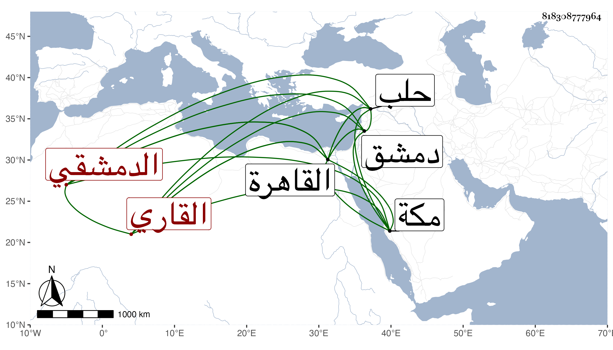

0902Sakhawi.DawLamic.ITO20230111-ara1.EIS1600.818308777964
Biography ID: 818308777964
741
محمد بن عيسى بن إبرهيم الشمس أبو عبد الله بن الشرف القاري الأصل الدمشقي ويعرف بابن القاري شقيق علي الماضي وهذا أكبرهما . ولد في رجب سنة اثنتين وستين وثمانمائة بدمشق وأمه خديجة ابنة الشمس محمد بن الدقاق السكري ، ونشأ فحفظ القرآن عند جماعة وجوده عند الشمس بن الخدر وغيره بل تلاه عليه لنافع وغيره وقرأ بعض المنهاج ، وتعانى كأبيه التجارة ودخل فيها لحلب وللحجاز غير مرة وجاور غير مرة أولها سنة ست وسبعين بل جاور سنة اثنتين وثمانين والتي بعدها وقدم القاهرة بعد موت أبيه لمشاركته في ميراثه بل أخبرني أنه أخذ منه ومن أبيه قبل موته نحو ستين ألف دينار ولقيني بمكة ثم بالقاهرة في رجب سنة ست وتسعين فسمع مني المسلسل وحديث زهير وغيرهما وقرأ على من أول الصحيح إلى باب تفاضل أهل الإيمان في الأعمال وتناوله مني وأجزت له ولبنيه المحيوي عبد القادر والزين عمر والبرهان إبراهيم والتقي أبي بكر والشهاب أحمد ومريم وفاطمة وجميع وابنتين فالأول والأخير من الذكور شقيقان من حرة وإبرهيم وفاطمة شقيقان من أم ولد وعمر من حرة والباقون من أمة .
